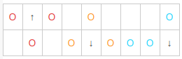
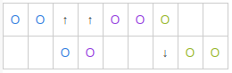
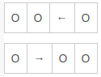
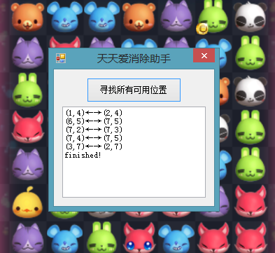

近期腾讯在安卓手机客户端出了个小游戏——天天爱消除。初次玩这款游戏真是觉得自己脑残，玩了半天也只能靠提示进行下去。小伙伴们个个几十万让我几万的情何以堪？！之后想了想如何自动消除，于是有了这篇文。注意这里仅仅是在Windows平台实现了算法，没有应用于android环境，所以想拿现成的辅助程序请出门左拐。
算法的实现比较容易，主要是数据结构需要注意，也是一下午就搞定了，初期为了快速开发选用了C#作为实现语言。本文的示例代码将以C#给出。
首先分析游戏，消除界面是一个7*7固定的棋盘，有有限种基本棋子(蓝，紫，红，白，咖啡，绿，橘黄)，还有一些特殊功能棋子暂不考虑，下面是一张游戏截图：
连成三个通常有几种情况可以考虑，大家在玩的时候应该能体会到，下面的6个图(注意颜色区分)是以32为分析单元的所有情况，对于23其实同理，只不过要转换一下。


下面有两个图是14的所有情况(41同理)：

在消除的时候通常就是按照上述规律进行的，所以我们只要对棋盘数据进行分割，然后对应上面几种情况，判断固定位置是否是相同的棋子，那么就可以直接知道应该交换哪两个位置了。
不同棋子可以用1234..这样简单表示，棋盘数据是一个7*7的二维数组，假设上图是这样一个二维数组：
1 | new int[7, 7] |
下面对数据进行23、14划分，由于划分之后要进行判断并返回所在棋盘数组的位置，因此需要定义一个含有位置字段和数据段的一个数据结构 ，位置是通过x、y坐标来定位，也就是数组下标：
1 | /// <summary> |
为了能够简单初始化，所以给了一个构造函数来初始化成员。
1 | /// <summary> |
下面的函数将棋盘数据转化为含有位置信息的新数组,通过成员refData进行存储：
1 | /// <summary> |
最重要的就是分析单元的提取，在进行提取之前，我们首先需要定义几个标志位：
1 | //行列计次 |
s_x,s_y 是用于定位棋子的变量，因为取32和23的时候需要紧挨着取，保证不能漏掉。
下面4个bool变量标志当前正在取哪种类型的区域。
1 | /// <summary> |
每次调用函数将返回下一个区域，这就靠自己领悟了。我觉得我写的稍微有点复杂，不过应该比较容易理解，效率上也是相当快的。
取一个区域进行分析，这里是连续分析，直到找到一个含有可交换棋子的区域 ：
1 | /// <summary> |
这个没什么技术含量，按部就班。
现在道德我们想要的两个point了，实际测试情况请看图，为了方便查看，下标进行了+1处理：

算法速度上没有严格测试，但都是瞬间完成的。